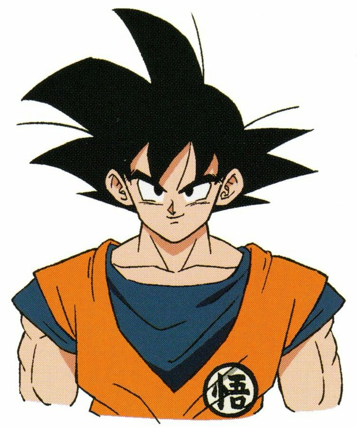
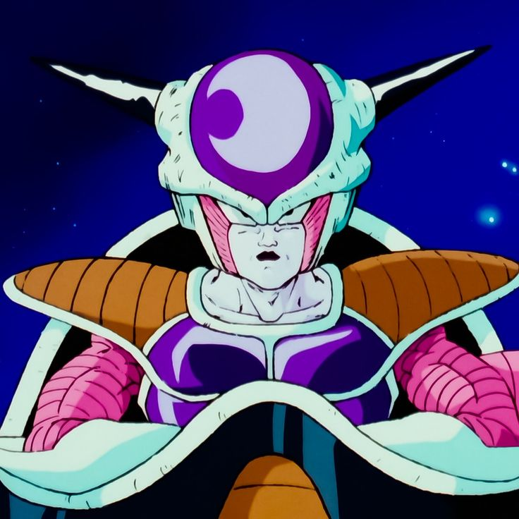

ITACHI
Um prodígio da família Uchiha, Itachi é um ninja que sacrifica sua vida e sua imagem para proteger seu irmão Sasuke e sua vila. Seu passado complexo revela lealdade e dor.
KAKASHI

Um ninja de elite conhecido como "O Ninja Copiador", Kakashi é mentor de Naruto, Sasuke e Sakura. Ele é sábio, relaxado e possui um passado misterioso ligado ao seu Sharingan.
GOKU
Guerreiro Saiyajin otimista e determinado, busca sempre desafios e protege a Terra com suas habilidades marciais. Madara Uchiha
NARUTO
Um jovem ninja sonhador e perseverante, Naruto deseja se tornar o Hokage de sua vila. Ele carrega o espírito de um demônio raposa, o que traz desafios, mas também força.
GOTEN
Filho de Goku, Goten é um jovem otimista e amigável, que adora treinar e lutar. Ele tem um forte laço com Trunks e é conhecido por sua habilidade em fusões.
TRUNKS
Filho de Vegeta e Bulma, Trunks é um guerreiro determinado e inteligente. Ele possui uma forma de combate madura e é crucial na luta contra ameaças ao mundo.
GOTENKS
A fusão entre Goten e Trunks, Gotenks é um guerreiro arrogante e divertido, que combina a energia e as habilidades dos dois. Ele é conhecido por suas travessuras e ataques poderosos.
CELL

Um bio-andróide criado a partir das células de vários guerreiros. Cell busca a perfeição e deseja lutar contra os mais fortes, utilizando a técnica de absorção para evoluir.
KURAMA
Um poderoso demônio que se torna aliado de Yusuke. Kurama é inteligente e estratégico, utilizando suas habilidades botânicas em combate. Ele é conhecido por seu caráter nobre.
MADARA

Antagonista de "Naruto", poderoso shinobi do clã Uchiha, busca paz a qualquer custo, utilizando métodos sombrios.
TOGURO
Um demônio com um grande poder de transformação, Toguro é um lutador implacável que busca desafios. Ele tem um passado trágico e uma rivalidade com Yusuke.
TEMARI
Uma kunoichi do País do Vento, Temari é conhecida por sua habilidade com o uso de leques e técnicas de vento. Ela é forte, determinada e atua como líder em várias situações.
YUSUKE
Protagonista de "Yu Yu Hakusho", ex-delinquente que se torna agente espiritual, lutando contra demônios e buscando justiça.
PICCOLO
Um Namekuseijin que começa como vilão, mas se torna um aliado importante. Piccolo é sábio, estrategista e um mentor para Gohan, desenvolvendo um profundo senso de justiça.
VEGETA
Príncipe dos Saiyajins, Vegeta é orgulhoso e ambicioso. Começa como vilão, mas se torna aliado de Goku, sempre buscando superar seu rival.
SASUKE
Um prodígio da família Uchiha, Sasuke busca vingança contra seu irmão Itachi. Inicialmente isolado, sua jornada é marcada por traições e um desejo profundo por poder.
OROCHIMARU
Um dos Sannin Lendários, Orochimaru é um ninja obsessivo por poder e imortalidade. Ele realiza experimentos em busca de técnicas proibidas e busca dominar o mundo ninja.
FREEZA
Um dos vilões mais icônicos, Freeza é um imperador galáctico cruel e ambicioso. Ele busca conquistar e destruir planetas, sendo conhecido por sua brutalidade e transformação em formas mais poderosas.
JOTARO
Protagonista de "Stardust Crusaders", Jotaro é um jovem sério e forte. Ele possui o Stand "Star Platinum", conhecido por sua velocidade e poder. Em sua jornada, busca salvar sua mãe e enfrentar Dio, mostrando coragem e determinação.
DIO
Um vampiro carismático e manipulador, Dio busca poder absoluto e imortalidade. Seu antagonismo com a família Joestar é central na série, sendo um mestre em estratégias cruéis.